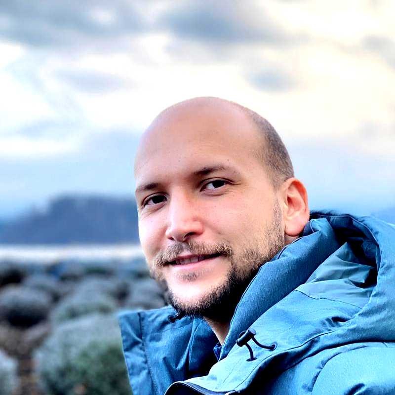

01Alguien pasa los pedidos del WhatsApp al Excel, uno por uno, todos los días.
Un Proceso Menos
Ese proceso que hacen a mano, se lo quito.
Ocho semanas. Yo lo diagnostico, yo mismo construyo la herramienta, y su gente la usa antes de que yo salga.

Duración
8 semanas
Con fecha de entrega acordada antes de empezar.
Alcance
1 proceso
El que más le duele. Queda por escrito antes de arrancar.
Precio
Fijo
Un solo número por todo el proyecto. No cobro por hora.
Cupos
2 de 4
Hoy tengo dos proyectos andando. Quedan dos cupos.
Si su empresa funciona chinomática, esto es para usted.
Chinomático: parece automático, pero en realidad hay un chino haciéndolo a mano, todos los días, a la misma hora.
02Hay una persona que es el sistema. Si se enferma o sale a vacaciones, la empresa se frena.
03El mismo informe se vuelve a armar a mano todos los lunes, con los mismos datos.
04El inventario de verdad solo lo tiene una persona en la cabeza, y no está escrito en ninguna parte.
05Hay tres archivos que deberían cuadrar entre sí y nunca cuadran.
06Ya compraron un software caro que nadie abre, y ahora nadie quiere hablar del tema.
Usted ya sabe cuál es. Es el que menciona cuando alguien le pregunta por qué no se ha ido de vacaciones.
Qué le queda cuando yo salgo.
No es un informe. Es algo prendido, con los datos de verdad de su empresa adentro, que su gente ya está usando.
01
La herramienta funcionando
Con sus datos reales cargados, no con datos de ejemplo. El día de la entrega ya se está usando para trabajar.
02
El proceso en una página
Qué quedó automático, qué quedó manual a propósito, y por qué. Una hoja, no un documento de sesenta.
03
Su gente entrenada
Y la grabación del entrenamiento, para el que entre a trabajar dentro de seis meses.
04
Todo a nombre suyo
El código, las cuentas, las claves y los accesos quedan de la empresa. Nada queda a nombre mío.
05
El tiempo ahorrado, medido
Cronometramos el proceso antes y después. Le entrego el número, no la sensación de que mejoró.
06
Dos revisiones incluidas
Al mes y a los dos meses de haber entregado. Ahí se ajusta lo que se haya torcido con el uso real.
07
Mi WhatsApp directo
Durante las ocho semanas me escribe a mí. No hay ejecutivo de cuenta ni mesa de ayuda de por medio.
08
Yo, en su oficina
El que llega a mirar cómo trabaja su gente soy yo. No mando a nadie a hacerlo por mí.
Lo que no le voy a hacer.
Prefiero decirlo aquí y no en la cuarta reunión, cuando ya perdimos los dos el tiempo.
No es cambiar toda la empresa
Es un proceso. Uno. Si lo que quiere es cambiarlo todo de una, no soy yo y no le voy a decir que sí.
No hay presentación bonita
No entrego sesenta diapositivas. Si lo que necesita es un documento para mostrarle a la junta, hay gente que lo hace mejor que yo.
No le armo el equipo de tecnología
No contrato ni selecciono gente por usted. Le puedo decir qué perfil buscar, pero hasta ahí.
No hay soporte permanente
Después de las dos revisiones incluidas, si quiere que le siga pendiente, se acuerda aparte. No queda amarrado a mí.
No le vendo licencias de nada
No me gano comisión de ningún software. Si lo que necesita ya existe y cuesta treinta dólares al mes, se lo digo y no se lo construyo.
No invento tecnología nueva
Si su negocio depende de investigar o de inventar algo que todavía no existe, ese no es mi oficio.
Y no trabajo con empresas grandes
Esto está hecho para empresas de menos de cinco mil millones de pesos al año. Si la suya ya factura mucho más que eso, no sé cómo se maneja una empresa de ese tamaño, y prefiero decírselo antes que cobrarle por averiguarlo.
Las ocho semanas, tal como pasan.
Esta parte no cambia de un cliente a otro. Lo único que cambia es qué proceso metemos adentro.
Semanas 1 y 2
Miro cómo trabajan hoy
Me siento al lado de la persona que hace el trabajo, con cronómetro. No pregunto cómo debería ser el proceso: miro cómo es de verdad, con los apuros y los atajos incluidos.
Al finalEl proceso dibujado tal como pasa hoy, con los tiempos reales de cada paso.
Semanas 3 y 4
Decidimos qué se automatiza y qué no
Nos sentamos usted y yo. Hay pasos que no vale la pena automatizar y se lo digo. De ahí sale una hoja con el alcance firmado: lo que no entre en esa hoja, no entra.
Al finalEl alcance por escrito y la fecha exacta de entrega.
Semanas 5, 6 y 7
Construyo la herramienta
Yo escribo el programa, apoyado en inteligencia artificial, que es lo que permite que una sola persona entregue en semanas lo que antes pedía un equipo y un trimestre. Cada viernes le muestro lo que va: si algo no sirve, se cambia esa semana y no al final.
Al finalLa herramienta andando con los datos de su empresa.
Semana 8
Su gente la usa y yo salgo
El entrenamiento no es una charla: su gente hace el trabajo del día dentro de la herramienta, conmigo al lado. Lo que se atore ahí se arregla ahí mismo. Después le entrego las claves y me voy.
Al finalTodo a nombre de la empresa y el equipo trabajando sin mí.
Después
Día 30
Primera revisión incluida. Ya pasó un cierre de mes completo con la herramienta.
Día 60
Segunda revisión incluida. Aquí se ve si el equipo la adoptó de verdad o volvió al Excel.
De dónde sale el número.
Un producto sin precio a la vista se ve raro, y lo sé. Le explico por qué no está en esta página y cómo se define en la primera llamada.
01
Depende de una sola cosa: cuánto trabajo manual hay que quitar. Un proceso que se come seis horas a la semana no cuesta lo mismo que uno que se come cuarenta.
02
Se lo digo en la primera llamada, no en la quinta. Treinta minutos y usted ya sabe el número. Sin propuesta de veinte páginas de por medio.
03
Es un solo número por todo el proyecto, acordado antes de empezar. No cobro por hora, ni por reunión, ni por correo. Si me demoro más de las ocho semanas, ese problema es mío y no suyo.
04
Se paga en tres partes: al arrancar, a la mitad y el día de la entrega.
Y si en esos treinta minutos me doy cuenta de que usted no necesita esto, se lo digo y ahí queda. No le cobro por decirle que no.
Lo que he construido y lo que se me cayó.
No tengo un portafolio de clientes de consultoría para mostrarle todavía. Tengo mis propias empresas, que es donde puse la plata.

USD 150.000 en el primer año, rentable desde el primer mes.
Arrancó en junio de 2025. Somos cinco personas y la primera cohorte tuvo cerca de treinta participantes.
El CRM, la página y la plataforma de comunidad los construí yo. Es mi trabajo principal hoy, y es la razón por la que esta práctica de consultoría tiene cupos contados.


100.000 reportes al año.
Vendida en cinco veces lo invertido, cerca de USD 1,5 millones. El producto lo construimos nosotros mismos.

Vendida en cerca de USD 1 millón.
Préstamos entre conocidos. Otra empresa que arrancó de cero y terminó vendida.
40 personas a cargo en R5.
Ahí armé el pipeline de datos completo y el sistema de modelos de riesgo. En mis propias empresas he tenido hasta quince personas a cargo.


Y las que no funcionaron
Beriblock quebró. El Palomo fracasó feo. Las pongo aquí porque el que solo le muestra las que le salieron bien le está escondiendo la mitad del oficio, y porque de esas dos aprendí a distinguir rápido cuándo un negocio no va a levantar.
Si prefiere oírme antes de escribirme.
Cuarenta minutos en el pódcast Ventaja, hablando de negocios aburridos y de qué es innovar de verdad.
Si su empresa es de las aburridas (ropa, comida, distribución, retail, servicios), es exactamente de las que me gustan.
Todavía no tengo testimonios escritos.
He trabajado con unas siete personas en mentoría y con varios clientes de consultoría. No les he pedido que escriban nada, y no voy a inventar frases para llenar este espacio.
Mientras tanto le ofrezco algo mejor que una frase entre comillas: pídame el teléfono de un cliente y llámelo usted. Le paso el contacto sin filtro y sin avisarle qué decir.
Espacio reservado
Aquí van dos o tres testimonios de clientes, con nombre y empresa, apenas los tenga por escrito.

Quién le va a hacer el trabajo.
Soy Salomón Muriel. He fundado empresas, he vendido dos y he quebrado otras. No soy consultor de diapositivas: la herramienta la escribo yo.
Lo mío es armar sistemas que le funcionen a la gente que los usa, y sacar las cosas del papel. Salomón Muriel
Esta es mi práctica personal, aparte de mi trabajo en Ignia. Aquí no hay agencia, ni socios, ni equipo junior: el que llega a su oficina y el que escribe el programa soy la misma persona. Por eso solo puedo tener cuatro proyectos al tiempo.
2empresas vendidas
2empresas quebradas
40personas a cargo en R5
15personas a cargo en sus propias empresas
Lo que siempre me preguntan.
Ya compramos un software caro y nadie lo usa. ¿Esto no va a terminar igual?
Casi siempre ese software no se usa porque se compró antes de mirar cómo trabaja la gente. Por eso las dos primeras semanas son de mirar y no de construir.
Y si resulta que lo que ya compraron sí sirve y solo está mal montado, se lo digo y montamos eso bien, en vez de construir algo nuevo. Le sale más barato y a mí me da lo mismo.
¿Tiene que ser presencial?
Las dos primeras semanas sí, al menos unos días. El trabajo manual no se entiende por videollamada: hay que ver la bodega, el mostrador o la cocina. El resto se puede hacer a distancia, con la revisión de los viernes.
¿Y si la herramienta se daña después de que usted salga?
Todo queda a nombre de la empresa y documentado, y hay dos revisiones incluidas, al mes y a los dos meses. Si después quiere que le siga pendiente, lo acordamos aparte.
La idea no es que quede dependiendo de mí. Si en un año quiere que otra persona le siga el trabajo, tiene todo lo que necesita para entregárselo.
Mi gente es mayor y no es muy de computadores.
Mejor. Las herramientas que hago se prueban con la persona que las va a usar, no con el gerente. Si su almacenista no la puede usar el primer día, está mal hecha y la arreglo yo.
¿Esto es con inteligencia artificial?
Donde sirve, sí, y es lo que me permite entregar en ocho semanas. Pero la inteligencia artificial no es el producto: el producto es que su gente deje de hacer el trabajo a mano.
A veces eso se resuelve con IA y a veces con una tabla bien hecha y un botón. No le voy a meter IA para poder decir que le metí IA.
¿Firmamos acuerdo de confidencialidad?
Sí, sin problema, y me parece bien que lo pida. Voy a ver sus números, sus clientes y su forma de trabajar.
Si todavía es muy temprano
¿Y si todavía no tengo ni la empresa andando?
Entonces esto no es lo suyo, y no le voy a vender ocho semanas de construcción para un proceso que todavía no existe.
Para ese momento trabajo uno a uno con personas que están empezando: tareas prácticas cada semana y seguimiento, hasta que las cosas pasen. Es trabajo individual, cuesta bastante menos que esto, y es otra conversación. Escríbame y le cuento.
Cómo se arranca.
Tres pasos. El primero le toma dos minutos y no lo compromete a nada.
01
Me escribe y me cuenta qué se hace a mano
Dos líneas por WhatsApp bastan. No necesito un documento ni una reunión previa para entender el problema.
02
Hablamos treinta minutos
Ahí le digo tres cosas: si le sirvo, cuál sería el proceso que atacaríamos, y cuál es el número. Si no le sirvo, también se lo digo ahí.
03
Firmamos el alcance y empiezo
Una hoja con qué entra, qué no entra, cuánto cuesta y qué día se entrega. Arranco el lunes siguiente.
2 de 4
cupos ocupados
Esto no es un truco de página web. Como cada proyecto lo hago yo y tengo mi trabajo en Ignia, el máximo real son cuatro al tiempo. Hoy tengo dos andando.
Cuando se llenen, este número va a decir cuatro de cuatro y no le voy a decir que sí.